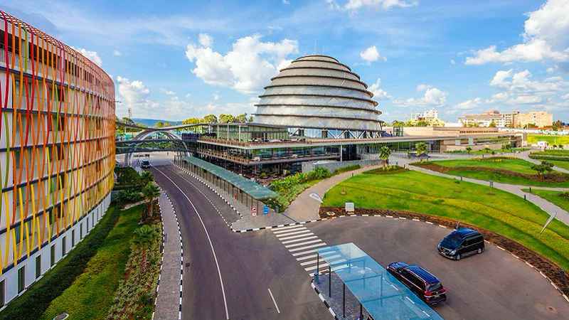
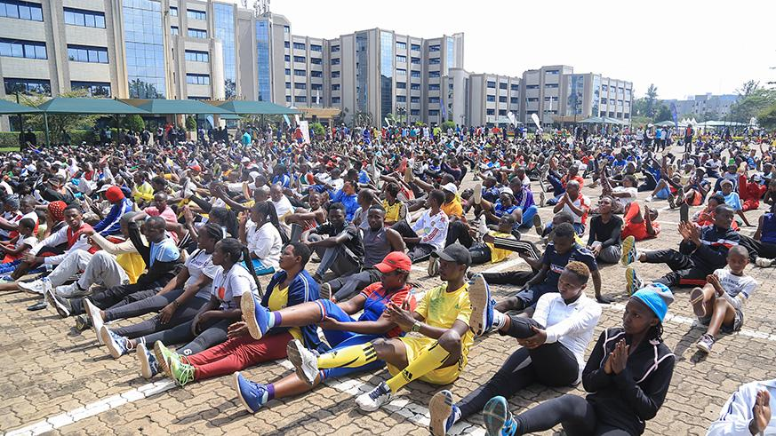

Kigali city is a central province that is made up of three(3) Districts namely Nyarugenge, Gasabo and Kicukiro. It is presently inhabited by approximately 1.2 million inhabitants to mean that it is most populated because it is where all the service providers are located as the capital city of the country
| Years | Total number of people | Total area of the city(Km2) | Population density(No. of people/km2) |
|---|---|---|---|
| 1991 | 140,000 | 112 | 1,250 |
| 1996 | 358,200 | 112 | 3,198 |
| 2001 | 605,000 | 314 | 3,198 |
| 2006 | 870,127 | 730 | 1,192 |
 